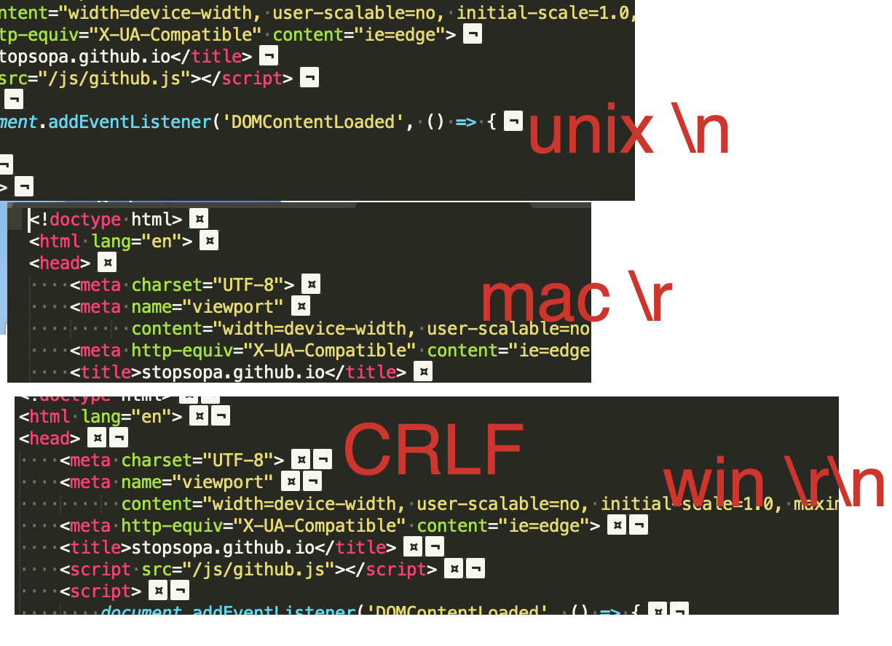

CRLF \r\n \mac \unix

Other options
RawLineEdit
RawLineEdit homepage - Installation
Indent using spaces
Show white spaces
Key binding modifiers
Pretty JSON
Pretty JSON
Default syntax
https://packagecontrol.io/packages/Default%20File%20Type
https://forum.sublimetext.com/t/default-syntax-on-3-1-1/37666/2